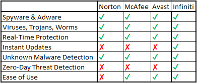

Currently, I am working on a product called Infiniti Antivirus. I have decided to build it using Artificial Neural Fuzzy Inference Systems, a technology similar to what Google uses in their iage recognition software.
Infiniti Antivirus is a self-evolving antivirus, designed to deal with all viruses, regardless if it is a simple worm or trojan, or if it is a virus engineered specifically to hack your computer.
Now for a comparison of features to other software:
